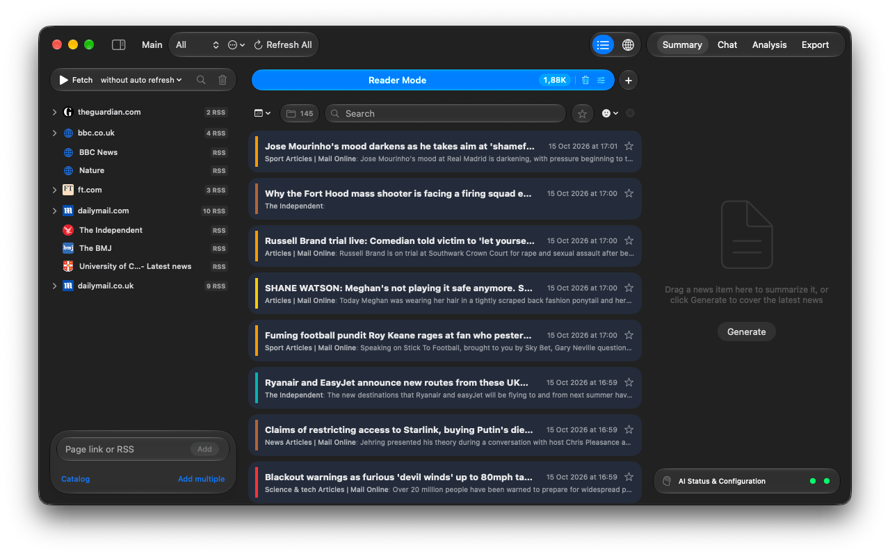

Handbook · Start here
Getting started
Create a project, add a few sources and read your first news in five minutes.
InfoBubble collects news from RSS feeds and websites, analyses every article on your Mac (tone, topics, places) and lets you read it as a feed, search it, summarise it, chat with it or filter it with your own AI prompt.
Quick start
- Create a project. On first launch choose Create and pick where to save the file. Everything you do is saved into it automatically, there is no Save button.
- Add sources. Click Catalog at the bottom of the sidebar, pick a country and press Add next to a few sites. Or paste any site address into Page link or RSS. See Using the Sources Catalog.
- Fetch. Press Fetch at the top of the sidebar (⌘R). News appears in the Reader Mode tab as it arrives and is analysed in the background.
- Choose an AI (optional). Reading, search, tags, the map and export work without any AI. Summaries, Chat and prompt filters need one. See Choosing an AI.
- Turn on auto-refresh with the menu next to Fetch (5 minutes to 6 hours) if you want the feed to stay current by itself.
The main window

- Toolbar
- Sidebar toggle, the project name, the Workspace picker with its actions menu (create, rename, delete), and Refresh All for every workspace at once. On the right: the List / Globe switch and the inspector tabs Summary, Chat, Analysis, Export.
- Sidebar
- Fetch / Stop and the auto-refresh interval on top, your sources in the middle, and at the bottom the Page link or RSS field with the Catalog and Add multiple links.
- News list
- Tabs for Reader Mode and your AI Search criteria, the filter bar, then the news. A status line at the bottom appears only while the app is fetching or analysing.
- Inspector
- Summaries, the news chat, analytics and export for the current tab. AI Status & Configuration at the bottom shows two lights, one for the analysis AI and one for the summary AI: green means ready.
Where to go next
- Reading and filtering news: filters, search syntax, the article window.
- AI Search criteria: let AI read everything and keep only what you asked for.
- Processing modes: what AI, Machine Learning and Heuristics mean in Settings.
Questions or problems? Open an issue in the
GitHub repository.